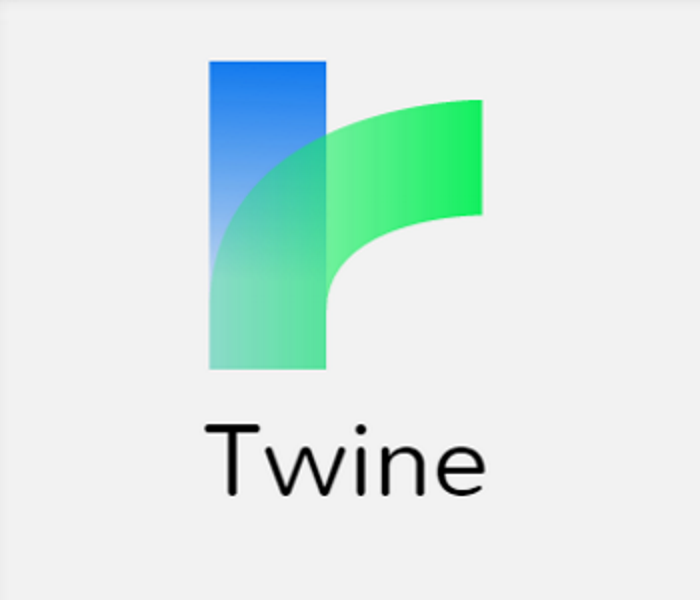
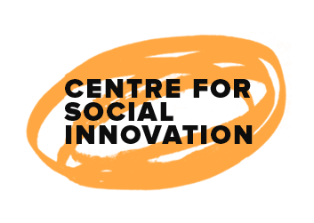
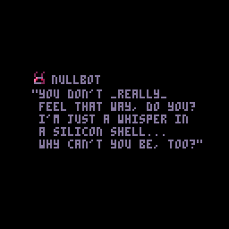

I'm proficient in Unity for game design and use it for 3d and 2d programming and design

As a writer, I'm a huge fan of text based games and adventures and make my own using Twine
Community Volunteering
Since 2017, I've volunteered at Civic Tech Toronto to help organize meetings and hacknights between IT workers and civic officials I've attended several events at CTYS and have been incredibly thankful for several of the programs there, and hope to volunteer and help youth in the community. I volunteer at the CTYS DECA program and work to organize community events and serve as a contact between community members working on social solutions.
Music and Design
I play piano, guitar, and work proficiently with several forms of digital music, and enjoy and write all genres of music. Eric Satie is my favourite classical composer
Game design is one of my greatest passion projects, with my inspirations being indie RPGs, Nintendo games, and 16 bit classics. This is a screen from my latest project, a roguelike RPG dealing with gender and identity